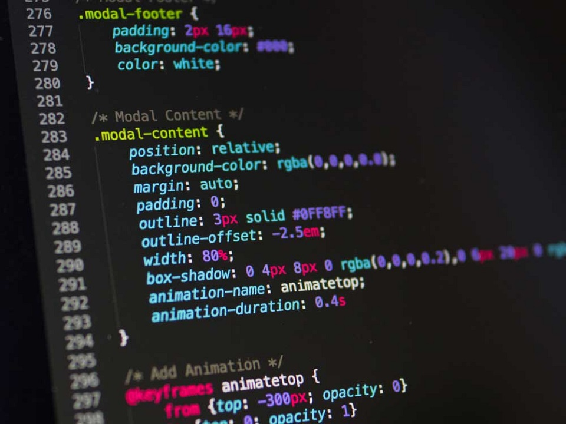
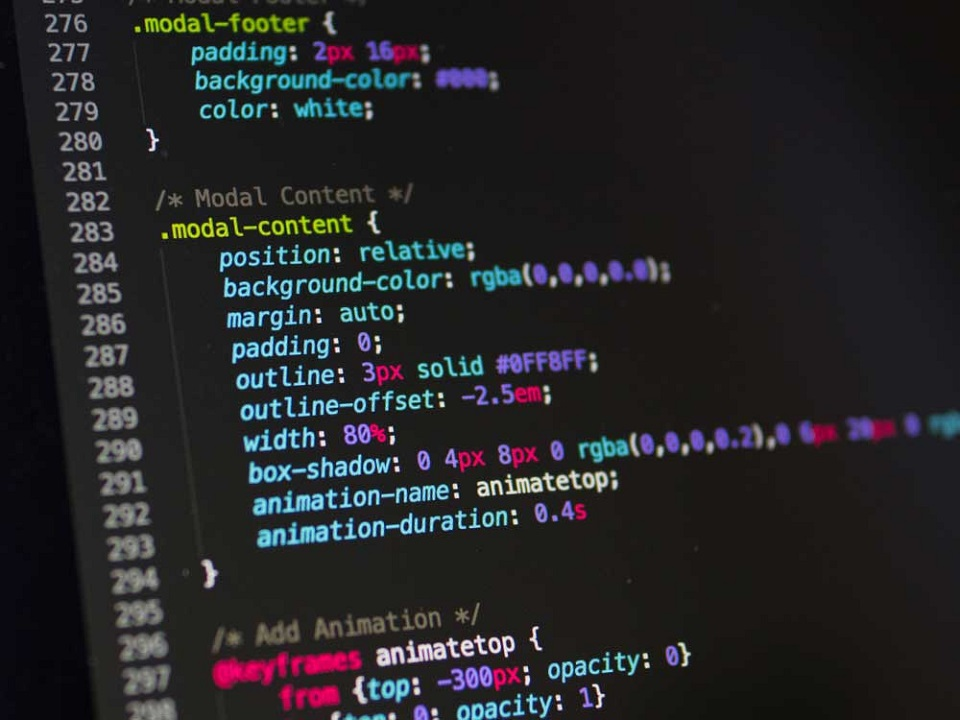

Home
Kevin Rimper
Halo Saya Kevin, seorang pemuda energik yang senang menjelajahi kehidupan dengan semangat dan kegembiraan. Saya percaya bahwa setiap hari adalah petualangan baru yang menunggu untuk dijelajahi. Dengan semangat yang membara, saya
menyukai banyak hal, mulai dari olahraga yang mendebarkan hingga petualangan dalam halaman buku atau di dunia virtual. Bermain Basket adalah kegemaran utama saya. Merasakan kebebasan di lapangan, meluncurkan bola ke dalam
keranjang, dan bersaing dengan semangat adalah hal yang saya nikmati setiap kali saya memegang bola basket. Saya juga menemukan kedamaian dan kebijaksanaan dalam membaca. Dari fiksi ilmiah hingga novel sejarah, saya selalu siap
untuk menjelajahi dunia baru melalui kata-kata. Di dunia digital, saya menemukan kesempatan untuk memperluas imajinasi saya dan berinteraksi dengan teman-teman di seluruh dunia melalui bermain game. Bermain game tidak hanya
tentang hiburan, tetapi juga tentang koneksi dengan orang lain dan mengeksplorasi kreativitas. Saat ini, saya bekerja sebagai analis data di sebuah perusahaan teknologi terkemuka. Dalam pekerjaan saya, saya mengeksplorasi
pola-pola yang tersembunyi di balik data untuk membantu perusahaan membuat keputusan yang lebih baik dan lebih efisien. Saya bermimpi untuk menjadi penggerak perubahan positif dalam masyarakat melalui teknologi. Saya percaya bahwa
dengan dedikasi, kerja keras, dan semangat, saya dapat berkontribusi pada dunia yang lebih baik bagi kita semua. "Saat hidup memberimu alasan untuk menyerah, temukan satu alasan untuk terus maju." - Anonymous
Blog
5 Teknologi Inovatif yang Akan Mengubah Cara Kita Bekerja di Masa Depan
Dunia teknologi terus berkembang dengan cepat, dan banyak inovasi menarik yang akan mempengaruhi cara kita bekerja di masa mendatang. Dalam artikel ini, kita akan menjelajahi lima teknologi inovatif yang diprediksi akan membawa
revolusi dalam dunia kerja.
Dari kecerdasan buatan hingga realitas virtual, teknologi-teknologi ini tidak hanya akan meningkatkan produktivitas, tetapi juga akan mengubah cara kita berinteraksi dengan pekerjaan sehari-hari.
Sumber: Forbes - Technology
Potensi Esport Game Mobile Legends dalam Dunia Kompetitif
Esport telah menjadi fenomena global yang mendapatkan popularitas yang besar dalam beberapa tahun terakhir. Salah satu game yang paling populer dalam dunia esport adalah Mobile Legends: Bang Bang.
Dalam artikel ini, kita akan menjelajahi potensi esport game Mobile Legends dalam dunia kompetitif. Dari jutaan pemain yang berpartisipasi dalam turnamen hingga penghargaan besar yang diberikan kepada pemain terbaik, Mobile
Legends telah membuktikan dirinya sebagai kekuatan utama dalam dunia esport.
Kita juga akan membahas dampak positif dan negatif dari Mobile Legends dalam komunitas esport, serta bagaimana game ini terus berkembang dan mempengaruhi budaya gaming di seluruh dunia.
Sumber: EsportsTalk - Mobile Legends Coverage
Menjaga Kesehatan Mental di Era Digital
Di era digital ini, terkadang sulit untuk menjaga kesehatan mental karena paparan informasi yang terus-menerus dan tekanan dari kehidupan sehari-hari. Namun, ada beberapa langkah sederhana yang dapat Anda lakukan untuk menjaga
kesehatan mental Anda.
Pertama, luangkan waktu untuk diri sendiri setiap hari. Pisahkan waktu untuk melakukan aktivitas yang Anda nikmati, seperti membaca, mendengarkan musik, atau bermeditasi. Kedua, tetap terhubung dengan orang-orang terdekat Anda.
Berbicaralah dengan teman atau keluarga tentang perasaan Anda, dan jangan ragu untuk meminta dukungan jika Anda membutuhkannya.
Terakhir, batasi paparan media sosial dan berita negatif. Tentukan batasan waktu untuk menggunakan media sosial dan pastikan untuk menyaring konten yang dapat memengaruhi suasana hati Anda. Dengan mengambil langkah-langkah ini,
Anda dapat menjaga kesehatan mental Anda di tengah-tengah tekanan modern.
Sumber: HelpGuide - Social Media and Mental Health
 
